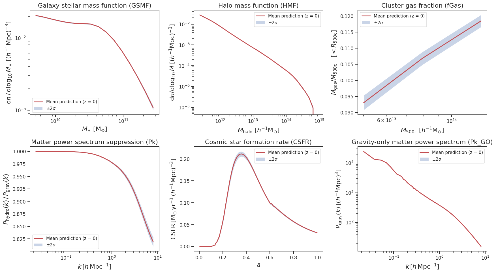
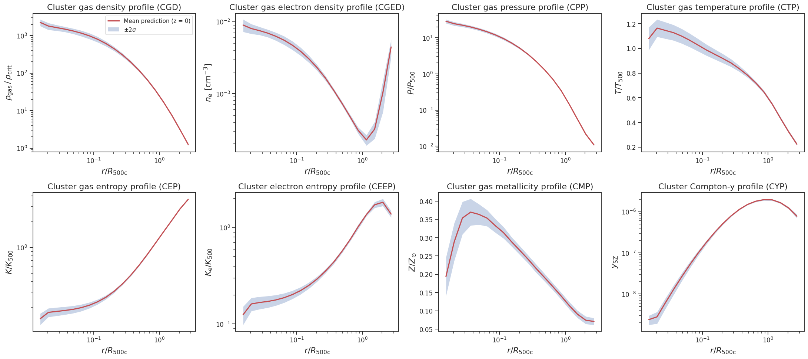
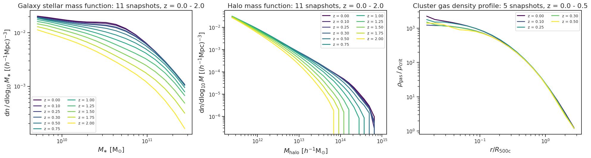

Available Summary Statistics
Every statistic is emulated at each stored snapshot; predictions at any redshift in between are linearly interpolated between the two bracketing snapshot emulators.
Summary statistics (5 subgrid + 2 cosmology parameters)
| Name | Description | Quantity | Redshifts |
|---|---|---|---|
GSMF |
Galaxy stellar mass function | $\mathrm{d}n / \mathrm{d}\log_{10} M_{\ast}$ $[(h^{-1}\mathrm{Mpc})^{-3}]$ | 11 snapshots, $z = 0 - 2$ |
HMF |
Halo mass function | $\mathrm{d}n / \mathrm{d}\log_{10} M$ $[(h^{-1}\mathrm{Mpc})^{-3}]$ | 11 snapshots, $z = 0 - 2$ |
fGas |
Cluster gas fraction | $M_{\mathrm{gas}} / M_{\mathrm{500c}}$ $[<R_{\mathrm{500c}}]$ | 7 snapshots, $z = 0 - 1$ |
Pk |
Matter power spectrum suppression | $P_{\mathrm{hydro}}(k) / P_{\mathrm{grav}}(k)$ | $z = 0,\, 0.1,\, 0.5,\, 1,\, 2$ |
CSFR |
Cosmic star formation history | $\mathrm{CSFR}(a)$ $[\mathrm{M}_{\odot}\,\mathrm{yr}^{-1}\,(h^{-1}\mathrm{Mpc})^{-3}]$ | $z = 0$ output (full history in $a$) |

Example predictions of the summary statistics (and the gravity-only power spectrum) at $z = 0$ with $\pm 2\sigma$ emulator uncertainty
Cluster profiles (5 subgrid + 2 cosmology parameters, $z = 0 - 0.5$)
Stacked radial profiles as a function of $r / R_{500c}$, emulated at 5 snapshots.
| Name | Description | Quantity |
|---|---|---|
CGD | Cluster gas density | $\rho_{\mathrm{gas}} / \rho_{\mathrm{crit}}$ |
CGED | Cluster gas electron density | $n_{\mathrm{e}}$ $[\mathrm{cm}^{-3}]$ |
CPP | Cluster gas pressure | $P / P_{500}$ |
CTP | Cluster gas temperature | $T / T_{500}$ |
CEP | Cluster gas entropy | $K / K_{500}$ |
CEEP | Cluster electron entropy | $K_{\mathrm{e}} / K_{500}$ |
CMP | Cluster gas metallicity | $Z / Z_{\odot}$ |
CYP | Cluster Compton-$y$ (tSZ) | $y_{\mathrm{SZ}}$ |

Example predictions of the eight cluster profiles at $z = 0$
Gravity-only statistics (2 cosmology parameters)
| Name | Description | Quantity | Redshifts |
|---|---|---|---|
Pk_GO |
Gravity-only matter power spectrum | $P_{\mathrm{grav}}(k)$ $[(h^{-1}\mathrm{Mpc})^{3}]$ | $z = 0,\, 0.1,\, 0.5,\, 1,\, 2$ |
Redshift evolution

One parameter set evaluated at every trained snapshot of the GSMF, HMF and gas-density-profile emulators
Input Parameters
| Parameter | Symbol | Range | Description |
|---|---|---|---|
kappa_w | $\kappa_\mathrm{w}$ | (2.0, 4.0) | AGN wind coupling |
e_w | $e_\mathrm{w}$ | (0.2, 1.0) | AGN energy efficiency |
M_seed | $M_\mathrm{seed}/10^{6}$ | (0.6, 2.0) | Black hole seed mass (in $10^6\,M_\odot$) |
v_kin | $v_\mathrm{kin}/10^{4}$ | (0.1, 1.2) | Kinetic feedback velocity (in $10^4$ km/s) |
epsilon_kin | $\epsilon_\mathrm{kin}/10^{1}$ | (0.02, 1.2) | Kinetic feedback efficiency (in $10^1$) |
omega_m | $\omega_\mathrm{m} = \Omega_\mathrm{m} h^2$ | (0.12, 0.155) | Physical matter density |
sigma_8 | $\sigma_8$ | (0.7, 0.9) | Amplitude of matter fluctuations |
Note: Parameters must be provided in the scaled units shown above, in this order. Pk_GO takes only $[\omega_\mathrm{m}, \sigma_8]$. The project fiducial cosmology is $\omega_\mathrm{m} = 0.14176$, $\sigma_8 = 0.8102$. Inputs outside the training box trigger a RuntimeWarning.
Installation
git clone https://github.com/nesar/cosmohydro_emu.git
cd cosmohydro_emu
pip install -e .
Requirements: Python ≥ 3.9, < 3.12 | NumPy | SciPy | SEPIA | Matplotlib (optional, plotting)
Quick Start
Basic Usage
from cosmohydro_emu import load_emulator, get_x_grid
# Load the Galaxy Stellar Mass Function emulator (11 snapshots, z = 0-2)
emu = load_emulator('GSMF')
print(emu.redshifts)
# [kappa_w, e_w, M_seed/1e6, v_kin/1e4, eps_kin/1e1, omega_m, sigma_8]
params = [3.0, 0.5, 1.0, 0.65, 0.5, 0.14176, 0.8102]
# Predict at z = 0.3 (interpolated between trained snapshots)
mean, std = emu.predict(params, z=0.3)
# Get the x-axis values
x_grid, x_label = get_x_grid('GSMF')
import matplotlib.pyplot as plt
plt.plot(x_grid, mean, label='Prediction')
plt.fill_between(x_grid, mean - 2*std, mean + 2*std, alpha=0.3, label=r'$\pm 2\sigma$')
plt.xscale('log')
plt.yscale('log')
plt.xlabel(x_label)
plt.ylabel('GSMF')
plt.legend()
plt.show()
Redshift Evolution
emu = load_emulator('HMF')
for z in emu.redshifts: # or any z inside emu.z_range
mean, std = emu.predict(params, z=z)
Gravity-Only Power Spectrum
emu_go = load_emulator('Pk_GO')
pk_grav, _ = emu_go.predict([0.14176, 0.8102], z=0.5) # P(k) in (Mpc/h)^3
# Hydro P(k) = suppression ratio x gravity-only P(k)
ratio, _ = load_emulator('Pk').predict(params, z=0.5)
pk_hydro = ratio * pk_grav
Batch Predictions
import numpy as np
params_batch = np.random.uniform(
low=[2.0, 0.2, 0.6, 0.1, 0.02, 0.12, 0.7],
high=[4.0, 1.0, 2.0, 1.2, 1.2, 0.155, 0.9],
size=(10, 7),
)
mean, std = emu.predict(params_batch, z=0.5) # shape (n_x, 10)
mean, std = emu.predict(params_batch, z=np.linspace(0, 1, 10)) # one z per row
List Available Statistics
from cosmohydro_emu import list_available_statistics, get_redshifts
stats = list_available_statistics()
print(stats['summary'], stats['profile'], stats['gravity_only'])
print(get_redshifts('fGas'))
API Reference
load_emulator(stat_name, redshifts=None, exp_variance=None)
Load the emulator for one summary statistic (all trained snapshots by default).
Parameters:
stat_name(str): Name of the summary statisticredshifts(array-like, optional): Subset of trained snapshot redshifts to loadexp_variance(float or int, optional): Override the PCA basis size; by default read from each trained model file
Returns: CosmoHydroEmulator object
CosmoHydroEmulator.predict(params, z=0.0, check_bounds=True)
Predict the statistic for given parameters at redshift z.
Parameters:
params(array-like):(n_params,)for one prediction or(n_pred, n_params)for a batchz(float or array-like): Redshift insideemu.z_range; a per-row array is accepted for batchescheck_bounds(bool): Warn when parameters lie outside the training design
Returns: (mean, std) in physical units on emu.x_grid; shape (n_x,) or (n_x, n_pred)
Attributes: stat_name, n_params, param_names, redshifts, z_range, x_grid, n_pc
list_available_statistics()
Dictionary of statistic names grouped by 'summary', 'profile' and 'gravity_only'.
get_x_grid(stat_name)
Independent-variable grid the emulator is defined on.
Returns: (x_grid, x_label)
get_redshifts(stat_name)
Trained snapshot redshifts of a statistic (ascending).
get_plot_info(stat_name)
Plotting information (title, labels, scales).
Returns: Dictionary with 'title', 'xlabel', 'ylabel', 'xscale', 'yscale'
get_valid_range(stat_name)
Recommended range of the independent variable.
get_parameter_info(stat_name=None)
Parameter names, LaTeX names, ranges, descriptions, scalings and fiducial values (restricted to the parameters of stat_name if given).
get_statistic_info(stat_name=None)
Summary of one or all statistics: title, category, number of parameters, redshifts and grid size.
Citation
@software{cosmohydro_emu,
author = {Ramachandra, Nesar},
title = {CosmoHydro Emulator: Multi-redshift emulation of summary statistics from hydrodynamical simulations},
year = {2026},
url = {https://github.com/nesar/cosmohydro_emu}
}